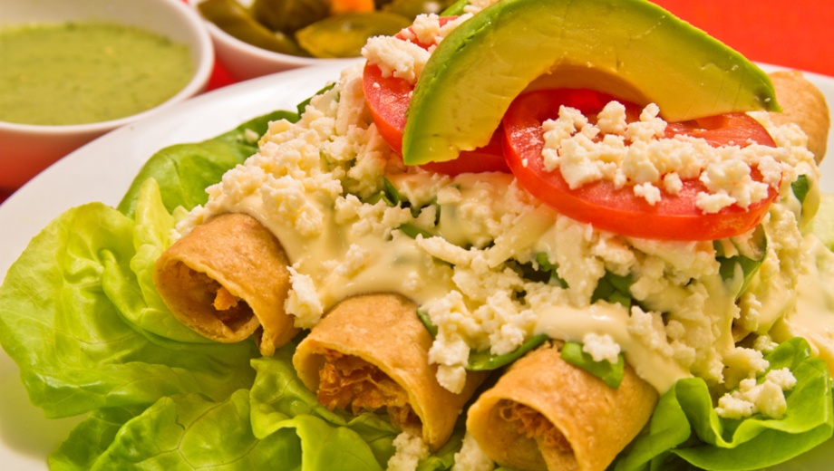

Tacos Dorados

Description
Today we have a simple yet very delicious mexican recipe: tacos dorados. Its not a complcated recipe and it can be prepared relatively quickly. The ingredients are
easy to get a hold of from any supermarket.
Ingredients
- Chicken
- Tortillas
- Sour Cream
- Cheese
- Avocados
- Tomato
Steps
- Break apart the chicken into small bits and roll them up with tortillas
- Heat up a deep pan and add enough oil to cover the base of the tacos
- Do not leave while they are frying. Roll the tacos over until they are golden
- Add toppings of your choice